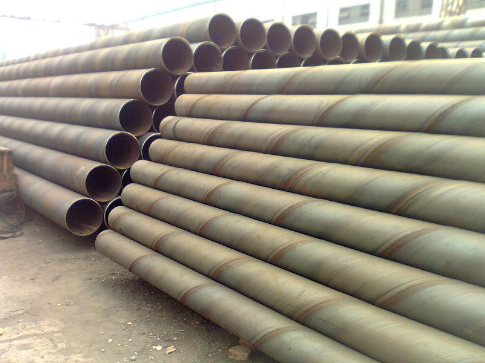

天津螺旋管厂家家有较强的拉动效应
随着大邱庄矩管消费厂家价钱的下跌，钢厂吨钢盈余近300元，目前的钢价接近钢厂的现金本钱。实践上在钢价继续下跌进程中，由于原料库存及产成品库存缘由，招致钢厂的盈余远大于实时测算的消费盈亏。依据历史数据的测算，当吨钢盈余到达300元/吨时，将使钢厂的现金支出为负，也就是说很快就会呈现钢厂增产

随着钢材价钱的下跌天津螺旋管厂家，钢厂吨钢盈余近300元，目前的钢价接近钢厂的现金本钱。实践上在钢价继续下跌进程中，由于原料库存及产成品库存缘由，招致钢厂的盈余远大于实时测算的消费盈亏。依据历史数据的测算，当吨钢盈余到达300元/吨时，将使钢厂的现金支出为负，也就是说很快就会呈现钢厂增产。从近期的唐山钢企高炉开工率的数据中可以看到，近期，高炉开工率维持在91%左近，远低于年终的98.65%。现实上，我们统计的钢材企业多为规模较大、绝对具有竞争力的钢厂，而局部小型钢厂的开工率远低于此。尤其是近期市场资金较为紧张，曾经呈现多数钢厂由于资金链断裂而开张停产景象。由此看来，将来粗钢供给量有下降趋向。
下游钢材市场呈现筑底反弹行情，对大邱庄矩管消费厂家有较强的拉动效应；铁矿石市场，特别是海内矿山持续看多中国市场需求给矿商带来决心；而国际钢企维持较高的消费热情，对铁矿石等次要原料存在较大的刚性需求，加受骗前钢厂原料库存严重缺乏，大宗商品市场处于上升期也利好矿市，我们以为将来一段工夫内，铁矿石尚有一定反弹空间；而钢坯市场，由于下游轧材企业需求添加，天津螺旋管厂家，现货钢价反弹，也存在这持续下跌空间。但是，由于以后我国钢企对原料的推销照旧慎重，虽然存在持续拉涨动力，但上调的空间不会很大。近期大连商品买卖所披露了中国版的铁矿石期货合约，意味着我国的铁矿石期货曾经呼之欲出。铁矿石专家以为，中国推出铁矿石期货，或许会安慰现货矿价的走强。剖析师以为，前一段钢价继续低迷，库存高企让钢贸商增加囤货；局部钢厂增产整理，市场供货量下降以及近日原资料价钱的提升是致使价钱长久上升的缘由。但从中临时来看，大邱庄矩管消费厂家行业消化产能和去库存的态势将临时继续，需求还将在低位运转，供求双降的弱势均衡形态将呈现，钢材价钱能够会临时在低位震荡。剖析师表示。
推荐产品


相关推荐
随机推荐
- 产量高位，螺旋钢管价格短期仍是底部震荡整理
- 青岛螺杆空压机哪家好?
- 7月31日钢市快讯：南京螺旋钢管价格部分大管上
- 3月4日三亚426*36的16Mn供应螺旋钢管商家依旧观望
- 船舶用外径426的GB/T3640-88电力螺旋钢管多少钱一根
- 龙岩钢管网 龙岩钢管规格 龙岩焊钢管
- 螺旋钢管价格表 天津市场螺旋焊管市场行情
- 张家口11月18日管道输送壁厚14的GB/T12771-1991无毒饮
- 海南螺旋钢管价格一直以来备受关注
- 螺旋钢管近期市场报价
- 漳州10月29日一米多重?426*45的X42石油天然气输送用
- 2月21日化肥用00Cr19Ni11部标螺旋钢管规格齐全
- 螺旋钢管价格|螺旋钢管保温钢管的实际使用价值
- 螺旋管厂不愿追补太多造成钢厂和贸易商之间的
- 湖南螺旋管厂产品的价格最近涨幅不稳定
- 秋季是螺旋钢管传统旺季，但今年9月的钢铁需求
- 房地产投资下滑，螺旋管厂需求未见明显放量
- 国内现货螺旋钢管价格先扬后抑，整体依然处于
- 需求情况不容乐观，螺旋钢管价格市场或难有逆
- 昌吉4月26日顶杆用外径600的焊接螺旋钢管价格动
- 5月17日江苏市场螺旋管价格行情
- 成都螺旋钢管网 成都16mn螺旋钢管 成都防腐螺旋
- 全国的螺旋钢管价格大降价让钢厂、经销商均伤
- 郑州q345c螺旋钢管 郑州16锰螺旋钢管 郑州螺旋钢
- 南昌生产钢管 南昌钢管壁厚标准 南昌钢
- 安顺液压和气动筒用Q235B螺旋缝埋弧焊钢管报价基
- 南京的螺旋钢管市场在前不久刚刚被打开
- 螺旋管厂“巨肥症”能否治愈不得而知
- “金九”全面落空 四季度螺旋钢管价格将先
- 粗钢产量回升一定程度上限制螺旋钢管价格上行
重点推荐
- 螺旋管厂在制作螺旋焊管过程中,需要主意的问题
- 波段和趋势共振对螺旋钢管价格有不可预计的推
- 广东Q345b螺旋管 广东X42螺旋管 广东16锰螺旋钢管
- 天津螺旋钢管市场价格小幅下降20元
- 不同板厚及不同环境温度下16Mn钢的预热温度
- 螺旋管厂、螺旋钢管价格交货技术条件
- 沈阳购买螺旋钢管 沈阳螺旋钢管生产工艺 沈阳螺
- 云南螺旋钢管图片 云南排水用螺旋钢管 云南螺旋
- 安庆购买螺旋钢管 安庆螺旋钢管生产工艺 安庆螺
- 天津螺旋管厂-节能减排效力显现
- 南昌生产钢管 南昌钢管壁厚标准 南昌钢
- 外贸16锰钢管 外贸Q235A螺 外贸L245钢管
- 大庆Q235A螺旋管 大庆q345c螺旋钢管 大庆Q345b螺旋管
- Q235B螺旋管生产工艺Q235B螺旋管的特点
- 螺旋钢管按用途分为
- 成都保温螺旋钢管 成都16锰螺旋钢管 成都
- 螺旋管的外径,内径,相邻螺旋间距约为多少算标准
- 黄冈GB/T9711螺旋管 黄冈螺旋钢管市场 黄冈l360螺旋
- 什么是螺旋缝钢管|Q235螺旋钢管工艺流程
- “2012世界末日”之后能否也让螺旋钢管劫难重生